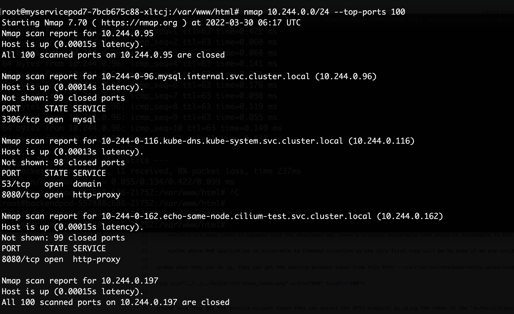

Hi all,
Welcome to the blog post,
This is the 2nd post on the series of Kubernetes Attack and Defense. If you haven't read out the first part, you can follow up here.
This post focuses on Importance of Network Security with Practical example.
Network Policies are a great way to secure your system from outsiders, they work like Firewall where you can define the type of network policy such as Egress or Ingree or Both. We can apply the Network Policy on either Pod or NameSpace.
We will first check the environment where there is no network policy is in place, we will see what can be the consequences and what can the attacker do?
Here you can check we have main deployment where the users can access the data and retrieve the data ( More shorten way - The Frontend Application). Now we also can see that there is another POD running in the same namespace `default` as running our frontend application.

By the way, PODs are non-isolated even if they are in different namespace.
So this is the application that is running and as this is demonstration purpose, this application is vulnerable to Command Injection. So suppose you somehow get access to their servers, either by Command Injection or any service credentials such as SSH on github, or by Social Engineering.
Now the first thing the attacker will try to do is either to escalate their privileges or increase the attack surface by survillencing the services and ports running in the network.
I tried to scan the network via Nmap. Now you definetly not get the nmap installed machine, you can either run the bash script or install the nmap via apt. ;)
So I scanned the network and I found mysql port running over one of the machine and some other ports as well. Here is the results.
Now I can just simply try to enumerate the service and check for any vulnerability, such as CVE if outdated version is used or default password, or bruteforcing. Attacker can use nmap scripts to check if any default creds are in use.

So this shows that our system have lack of security. Now what if I just change the default credentials of mysql, will this be enough to get secured. Yes, default credentials will work but did we think that why SQL POD should be accessible by frontend application.
We will try to impose Network Policy so that SQL pod can only accessible by the backend service (not kubernetes service :P ) or POD (in this case). I created three namespaces i.e., 1) Frontend 2) backend 3) Internal.
Now what I wanted is pods inside `internal` Namespace should be accessible only by pods inside `backend` namespace and not by any pods inside any namespaces. Hope you got the point.
???try to add drawing of the infrastructureThese are the pods running inside their namespaces.


We have created the namespaces now the next step is to create a network policy that will done the work that what we wanted to be done.
Network-Policy.yamlIf we try to scan the network again we will see that the SQL Pod IP is not present that means, our frontend application can not access the SQL pod.
To very this, we can see the ping results,

Here we can verify that the network policy is working accurately and this is how we can minimize the attack surface for the attacker.
Now if you wanted to allow connections only from specific pod inside specific namespace, this policy can do that. So this policy allows connections to mysql from only pod that contains `mainbackendp` label from the namespace `backend`.Network-Policy.yaml

That's all for this blog post, the main objective for this blog post is to show the importance of network policy inside kubernetes.
Hope you found this blog useful
Thanks for your time